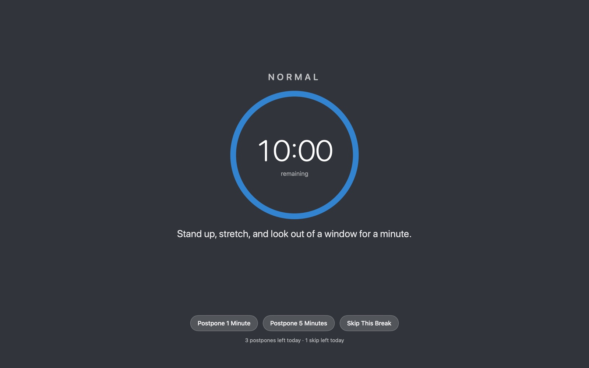

Breaks your way
Start with a 10-minute break every hour and a 15-second micro-break every 15 minutes, or make your own.
Recess is a free, open-source break reminder for your Mac. It dims the screen when it's time to rest your eyes, stretch or get up, notices when you've already stepped away, and stays out of the way the rest of the time.

Recess isn't notarized by Apple yet, so the first time you open it macOS will say it can't verify the app. That's expected; you only have to allow it once.
After copying the app to Applications, remove the download flag and open it:
xattr -dr com.apple.quarantine /Applications/Recess.app
open /Applications/Recess.appWhy the warning? Apple only skips it for apps signed through its paid developer programme. Recess is open source, so you can read every line or build it yourself instead. Each release lists the DMG's SHA-256 checksum too.
Start with a 10-minute break every hour and a 15-second micro-break every 15 minutes, or make your own.
Stepping away or putting the Mac to sleep counts as a break, so you're not nagged the moment you sit back down.
Time breaks from when the last one was due or ended, at set minutes past the hour, or from your calendar. Limit them to work hours and weekdays.
Start on time, wait for a pause in your typing, or ask first. Postpone, skip or end early, and cap how often you're allowed to.
A countdown ring, a breathing guide, clocks, eye-rest and desk-stretch routines, or your own text, website, video or photos.
Hold breaks during video calls, presentations, fullscreen apps, Focus or calendar events, or whenever your own script says so.
A heads-up notification before a break, sounds, spoken reminders, a screen flash, or your own AppleScript and shell scripts.
A live countdown in the menu bar, global keyboard shortcuts, and recess:// links for automation.
A log and chart of breaks taken, postponed and skipped, and optionally how long you spend in each app.
With Xcode 16 or later installed:
git clone https://github.com/NeelkanthTandel/recess.git
cd recess
make install # builds, copies to ~/Applications and opens it